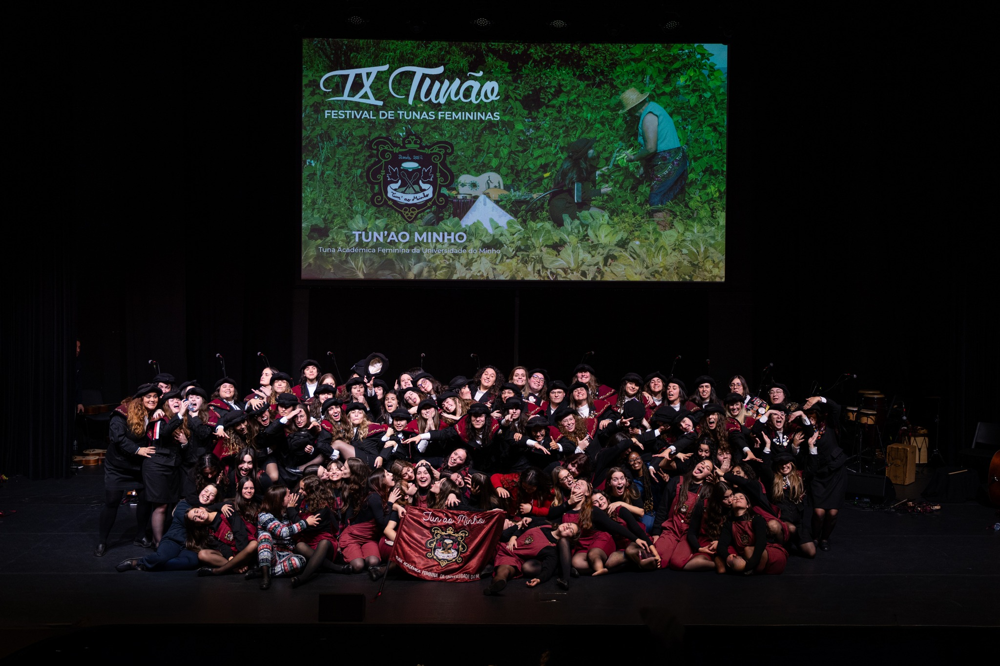
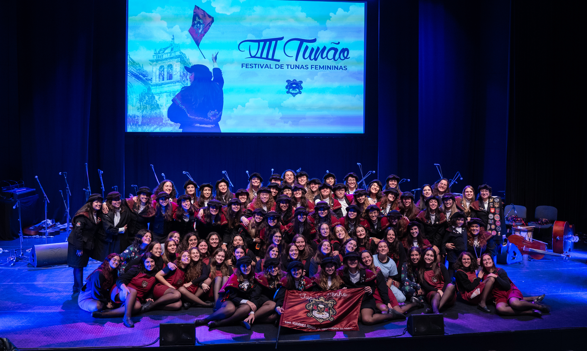
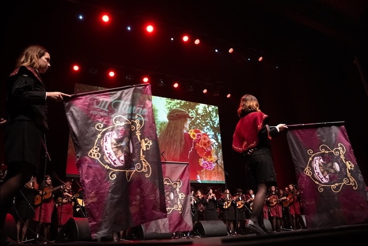
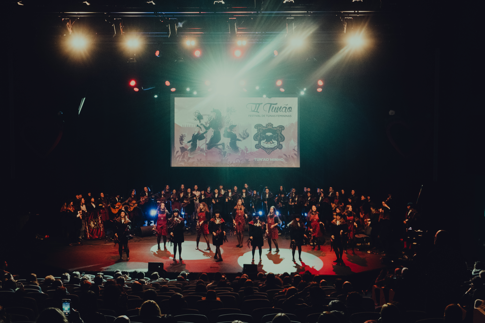
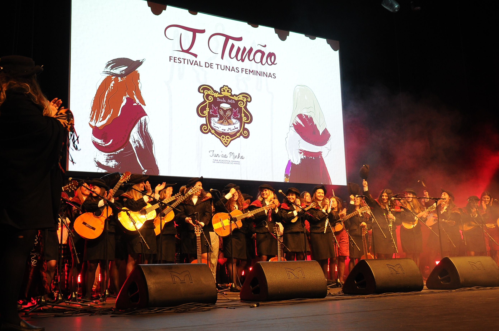
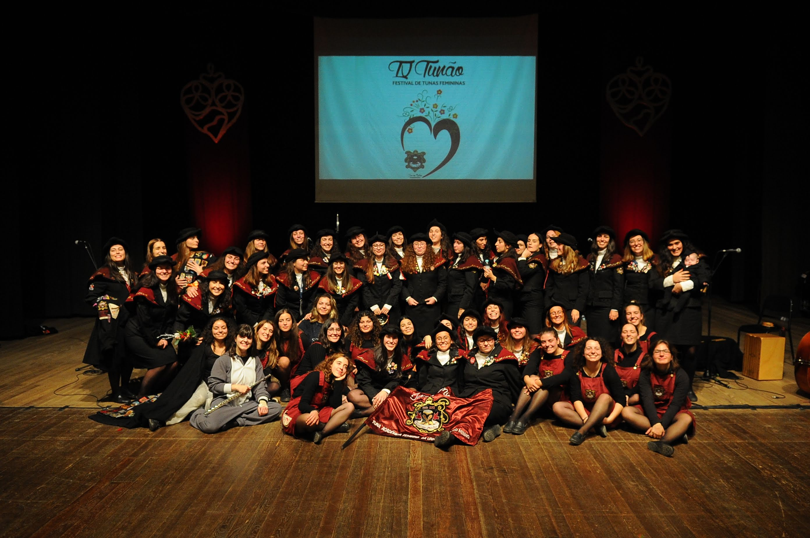
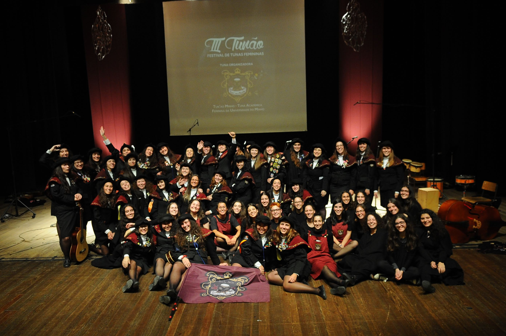
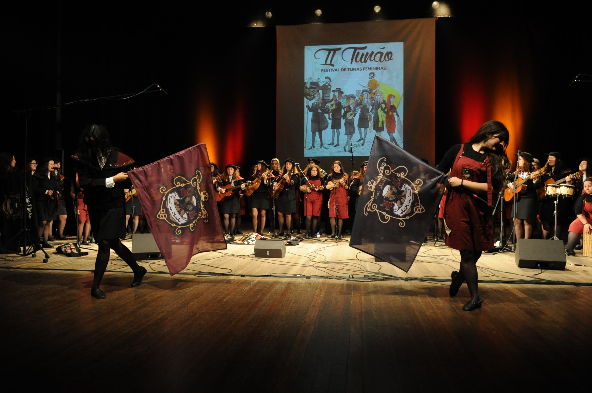
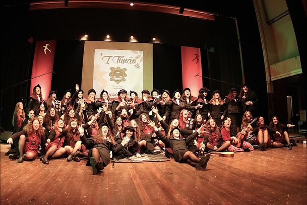

Sobre o Tunão
O Tunão realiza-se ao longo de quatro dias, iniciando-se oficialmente com o Arraial e Rally de Tascas Tas’ca Piela, que acontece na quarta-feira antes do espetáculo, com o objetivo de convidar e aproximar a comunidade académica ao evento. Na sexta-feira, realiza-se a Noite de Serenatas, por norma no Salão Nobre da Reitoria da Universidade do Minho, e o memorável LipSync, um pequeno concurso que desafia as tunas a uma competição mais descontraída e extremamente divertida. O momento mais aguardado do festival é a noite de espetáculo, no sábado, onde as tunas convidadas e extra-concurso sobem ao palco do Forúm Braga para competir por diversos prémios e perante um grupo de jurados selecionados com critério e cuidado e um público que já ultrapassou as 600 pessoas. O Tunão termina no domingo, com o habitual convívio entre tunas.
Em 2026 festejamos a décima edição do nosso festival, contá-mos com a tua presença?
9 anos de Tunão








